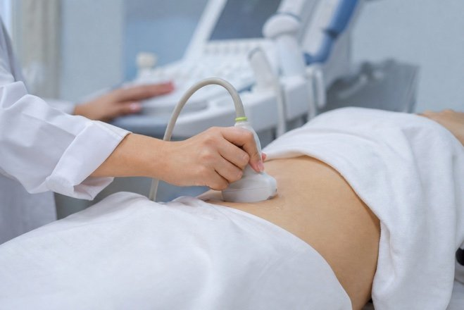

УЗИ
- Свыше 40 видов УЗИ-диагностики
- Новейшее оборудование высокой точности
- Быстрая расшифровка результатов

Ультразвуковое исследование
Цены на услуги
| Медицинская услуга | Стоимость | Время |
|---|---|---|
| Эхокардиография (УЗИ сердца - взрослый) | 2 800 ₽ | 40 мин |
| Ультразвуковое исследование лимфатических узлов (одна анатомическая зона) | 900 ₽ | 20 мин |
| Ультразвуковое исследование плевральных полостей (с двух сторон) | 900 ₽ | 20 мин |
| Ультразвуковое исследование печени | 1 300 ₽ | 20 мин |
| Ультразвуковое исследование желчного пузыря и протоков | 900 ₽ | 20 мин |
| Ультразвуковое исследование желчного пузыря с определением его сократимости (эхохолецистография) | 1 600 ₽ | 20 мин |
| Ультразвуковое исследование поджелудочной железы | 800 ₽ | 20 мин |
| Ультразвуковое исследование селезенки | 800 ₽ | 20 мин |
| Ультразвуковое определение жидкости в брюшной полости | 500 ₽ | 20 мин |
| Ультразвуковое исследование органов брюшной полости (печень, желчный пузырь, поджелудочная железа, селезенка, мезентериальные лимфоузлы) взрослому | 2 500 ₽ | 20 мин |
| Ультразвуковое исследование щитовидной железы и паращитовидных желез | 1 800 ₽ | 20 мин |
| Ультразвуковое исследование надпочечников | 700 ₽ | 20 мин |
| Ультразвуковое исследование почек | 1 600 ₽ | 20 мин |
| Ультразвуковое исследование почек и надпочечников | 1 500 ₽ | 20 мин |
| Ультразвуковое исследование почек с мочевым пузырем | 1 300 ₽ | 20 мин |
| Ультразвуковое исследование мочевого пузыря | 700 ₽ | 20 мин |
| Ультразвуковое исследование мочевого пузыря с определением остаточной мочи | 700 ₽ | 20 мин |
| Дуплексное сканирование экстракраниальных отделов брахиоцефальных артерий | 2 800 ₽ | 40 мин |
| Дуплексное сканирование вен нижних конечностей | 3 000 ₽ | 30 мин |
| Дуплексное сканирование артерий нижних конечностей | 3 000 ₽ | 40 мин |
| Ультразвуковое исследование печени с ЦДК | 800 ₽ | 20 мин |
| Ультразвуковое исследование печени и желчного пузыря | 1 500 ₽ | 20 мин |
| Ультразвуковое исследование печени, поджелудочной железы и желчного пузыря | 1 800 ₽ | 20 мин |
| Ультразвуковое исследование органов брюшной полости и почек с мочевым пузырем | 3 600 ₽ | 20 мин |
| Ультразвуковое исследование почек с ЦДК | 1 300 ₽ | 25 мин |
| Ультразвуковое исследование почек и надпочечников | 1 500 ₽ | 25 мин |
| Ультразвуковое исследование почек с мочевым пузырем и остаточным объемом | 1 700 ₽ | 25 мин |
| Срок беременности перед медицинским абортом | 1 300 ₽ | 20 мин |
| Ультразвуковое исследование щитовидной железы и паращитовидных желез | 1 400 ₽ | 20 мин |
| Ультразвуковое исследование слюнных желез | 1 000 ₽ | 20 мин |
| Ультразвуковое исследование мягких тканей (одна анатомическая зона) | 900 ₽ | 20 мин |
| Ультразвуковое исследование молочных желез с лимфоузлами | 2 000 ₽ | 20 мин |
| Ультразвуковое исследование предстательной железы с пузырьками абдоминально | 1 500 ₽ | 20 мин |
| Ультразвуковое исследование мошонки в ЦДК | 1 800 ₽ | 20 мин |
| Ультразвуковое исследование полового члена ЦДК | 1 000 ₽ | 20 мин |
| Ультразвуковое исследование предстательной железы, мошонки и мочевого пузыря с остаточным объемом | 2 500 ₽ | 20 мин |
Ничего не найдено. Уточните название услуги или позвоните нам.
| Медицинская услуга | Стоимость | Время |
|---|---|---|
| Эхокардиография (УЗИ сердца - взрослый) | 2 800 ₽ | 40 мин |
| Ультразвуковое исследование лимфатических узлов (одна анатомическая зона) | 900 ₽ | 20 мин |
| Ультразвуковое исследование плевральных полостей (с двух сторон) | 900 ₽ | 20 мин |
| Ультразвуковое исследование печени | 1 300 ₽ | 20 мин |
| Ультразвуковое исследование желчного пузыря и протоков | 900 ₽ | 20 мин |
| Ультразвуковое исследование поджелудочной железы | 800 ₽ | 20 мин |
| Ультразвуковое исследование селезенки | 800 ₽ | 20 мин |
| Ультразвуковое определение жидкости в брюшной полости | 500 ₽ | 20 мин |
| Ультразвуковое исследование органов брюшной полости (печень, желчный пузырь, поджелудочная железа, селезенка, мезентериальные лимфоузлы) взрослому | 2 500 ₽ | 20 мин |
| Ультразвуковое исследование желудка | 1 500 ₽ | 20 мин |
| Ультразвуковое исследование органов брюшной полости (печень, желчный пузырь, поджелудочная железа, селезенка, мезентериальные лимфоузлы) и желудка | 3 000 ₽ | 30 мин |
| Ультразвуковое исследование щитовидной железы и паращитовидных желез | 1 800 ₽ | 20 мин |
| Ультразвуковое исследование надпочечников | 700 ₽ | 20 мин |
| Ультразвуковое исследование почек | 1 600 ₽ | 20 мин |
| Ультразвуковое исследование почек и надпочечников | 1 500 ₽ | 20 мин |
| Ультразвуковое исследование почек с мочевым пузырем | 1 300 ₽ | 20 мин |
| Ультразвуковое исследование мочевого пузыря | 700 ₽ | 20 мин |
| Ультразвуковое исследование мочевого пузыря с определением остаточной мочи | 700 ₽ | 20 мин |
| Дуплексное сканирование почек и артерий почек | 1 800 ₽ | 30 мин |
| Ультразвуковое исследование печени и желчного пузыря | 1 500 ₽ | 20 мин |
| Ультразвуковое исследование печени, поджелудочной железы и желчного пузыря | 1 800 ₽ | 20 мин |
| Ультразвуковое исследование органов брюшной полости и почек с мочевым пузырем | 3 600 ₽ | 20 мин |
| Ультразвуковое исследование почек с мочевым пузырем и остаточным объемом | 1 700 ₽ | 25 мин |
| Ультразвуковое исследование щитовидной железы и паращитовидных желез | 1 400 ₽ | 20 мин |
| Ультразвуковое исследование слюнных желез | 1 000 ₽ | 20 мин |
| Ультразвуковое исследование мягких тканей (одна анатомическая зона) | 900 ₽ | 20 мин |
| Ультразвуковое исследование молочных желез с лимфоузлами | 2 000 ₽ | 20 мин |
| Ультразвуковое исследование предстательной железы с пузырьками абдоминально | 1 500 ₽ | 20 мин |
| Ультразвуковое исследование мошонки в ЦДК | 1 800 ₽ | 20 мин |
| Ультразвуковое исследование предстательной железы, мошонки и мочевого пузыря с остаточным объемом | 2 500 ₽ | 20 мин |
| Ультразвуковое исследование предстательной железы (ТРУЗИ) | 1 800 ₽ | 20 мин |
| Ультразвуковое исследование крупного сустава (локтевой, л/запястный, коленный, г/стопный) | 1 500 ₽ | 20 мин |
| Ультразвуковое исследование крупных суставов (локтевые, л/запястные, коленные, г/стопные) | 2 000 ₽ | 40 мин |
| УЗИ малого таза трансабдоминально | 2 000 ₽ | 20 мин |
| УЗИ малого таза трансвагинально | 2 000 ₽ | 20 мин |
| УЗИ малого таза у женщин трансабдоминально и транвагинально | 2 500 ₽ | — |
| Фолликулометрия | 1 500 ₽ | 20 мин |
| Ультразвуковое исследование «Окно имплантации» | 1 500 ₽ | 20 мин |
| Срок беременности перед медицинским абортом | 1 300 ₽ | 20 мин |
| Доплерометрия маточно-плацентарного кровотока (ЧСС плода и кровоток) | 1 700 ₽ | 40 мин |
| Ультразвуковое исследование плода (Фетометрия) | 1 800 ₽ | 40 мин |
| Доплерометрия маточно-плацентарного кровотока и фетометрия | 2 500 ₽ | 40 мин |
| Ультразвуковое исследование шейки матки (цервикометрия) | 1 000 ₽ | 20 мин |
| Ультразвуковое исследование плода (определение индекса амниотической жидкости) | 500 ₽ | 20 мин |
| Ультразвуковое исследование до 12 недель беременности (ЧСС плода, размер эмбриона) | 1 500 ₽ | 20 мин |
| Дуплексное сканирование экстракраниальных отделов брахиоцефальных артерий | 2 800 ₽ | 40 мин |
| Дуплексное сканирование вен нижних конечностей | 3 000 ₽ | 30 мин |
| Дуплексное сканирование артерий нижних конечностей | 3 000 ₽ | 40 мин |
| Дуплексное сканирование артерий и вен нижних конечностей | 5 000 ₽ | 60 мин |
| УЗИ интракраниального отдела брахиоцефальных артерий | 1 800 ₽ | 20 мин |
| УЗИ экстракраниальных и интракраниальных отделов брахиоцефальных артерий | 4 000 ₽ | 40 мин |
Ничего не найдено. Уточните название услуги или позвоните нам.
Врачи
-

Хрипкова Елена Алексеевна
Врач ультразвуковой диагностики
- стаж 14 лет
-
Челпанов Владимир Константинович
Врач ультразвуковой диагностики
Записаться на приём
Запишитесь на приём
Оставьте свой номер телефона — мы перезвоним.
Ответим на вопросы, подберём удобное время и запишем на приём